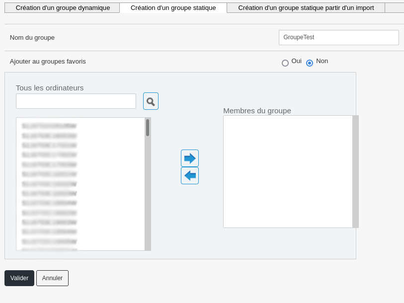
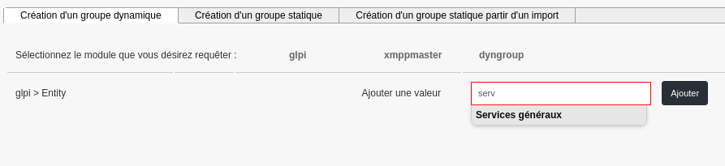
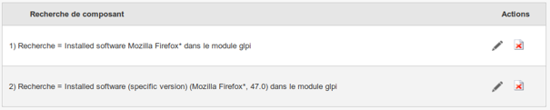

Machine Group¶
This section covers the Machine Group part of the Medulla tool.
Machine groups allow you to create a set of machines. There are three types of groups: - Static groups; - Dynamic groups; - Groups created from an import.
Static Group¶
In a static group, the selection of member machines is manual.

It is possible to edit a static group to add or remove other machines. Simply use the arrows to add or remove machines from the group.
Dynamic Group¶
A dynamic group is a group based on a query on the inventory database of machines based on criteria. It is possible to combine multiple criteria with Boolean operators. The result is stored as a query (dynamic) or as a result (fixed at a given time).

Three modules are available for creating dynamic groups: - GLPI Module: allows the use of machine inventory criteria; - Xmppmaster Module: allows the use of Active Directory or LDAP; - Dyngroup Module: allows the use of existing dynamic groups.
Unless specific, always choose « GLPI ». Indeed, the query can be performed on different fields, see below:

For example, using the « Entity » field appears as follows:

Auto-completion offers existing values after entering three characters.
Concrete Example of Dynamic Group¶
For our example, we will create a machine group where an obsolete version of Firefox is present. To begin, add a « Software » criterion with the value « Mozilla Firefox « to test for the presence of Firefox (the « » character can be used to match any character and thus find all versions of Firefox); Then, click on « glpi » again to add a second criterion; Choose « Version » and then enter « Mozilla Firefox « and « 47.0 » (this criterion will be inverted, more information just after) *(The « Version » criterion alone would return machines with either obsolete Firefox OR no Firefox at all)

Use the auto-completion list to adapt the search criterion as accurately as possible: For example, Firefox appears with an entry for each version, hence the use of « * ».

Once the query is complete, it must be saved. It is possible to save as a « query » (dynamic) or as a « result » (query at a given time). If the group is added to the favorite groups, it can be found in the left menu, « Favorite Groups » tab.
Boolean Operator:¶
The available operators are AND, OR, NOT, as well as ( ). AND: Allows you to combine queries: AND(1,2) NOT: Inverts the result of the second query: NOT(2) OR: Allows you to use either query: OR(1,2)
For our query, we need to combine the two conditions AND and NOT: AND(1,NOT(2))
This means asking for machines with « Mozilla Firefox * » software installed AND whose version of « Mozilla Firefox * » IS NOT « 47.0 » You can check your operators by clicking the « Check » button It is also possible to view the group’s contents before validating by clicking the « View Contents » button